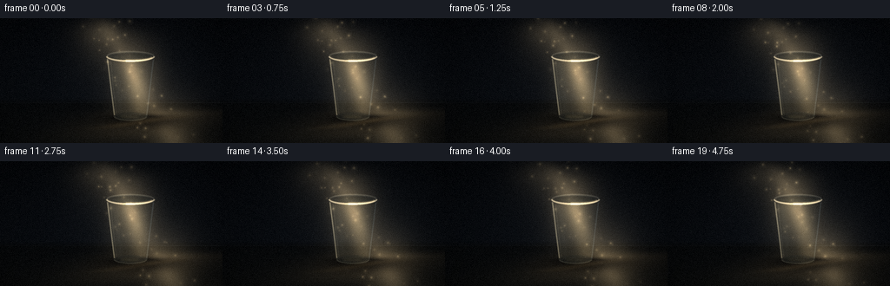
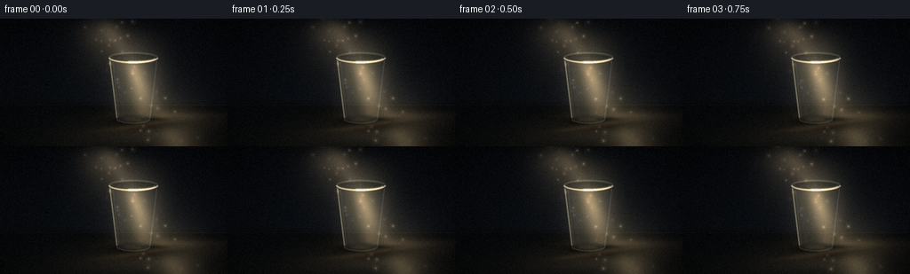
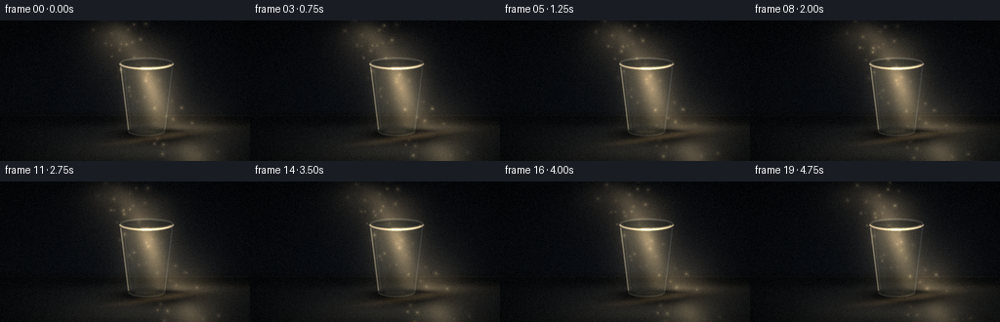
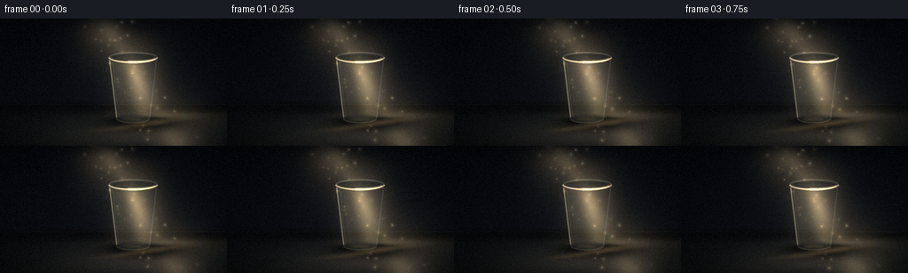

CODING AGENTS AS PIXEL WORLD MODELS
traex/DeepSeek-V4.1-Flash · phygen_044
点击播放 · 原生 RGB 像素
逐轮保存的候选
回放视频、检查图与代码变化。
每份候选均可单独播放。实际图片检查记录在下方工具轨迹中。
候选 01播放与检查图
点击播放 · 原生 RGB 像素


展开代码变化
--- 上一保存版本
+++ 本次保存版本
@@ -0,0 +1,343 @@
+from pathlib import Path
+
+import numpy as np
+from PIL import Image, ImageDraw, ImageFilter
+
+import artifact_io
+
+
+CASE_DIR = Path(__file__).resolve().parent
+WIDTH = 256
+HEIGHT = 144
+FRAMES = 20
+FPS = 4.0
+SS = 4
+W = WIDTH * SS
+H = HEIGHT * SS
+
+
+def smoothstep(edge0, edge1, values):
+ t = np.clip((values - edge0) / (edge1 - edge0), 0.0, 1.0)
+ return t * t * (3.0 - 2.0 * t)
+
+
+def gaussian_blur(mask, radius):
+ image = Image.fromarray(np.clip(mask * 255.0, 0, 255).astype(np.uint8), "L")
+ image = image.filter(ImageFilter.GaussianBlur(radius))
+ return np.asarray(image, dtype=np.float32) / 255.0
+
+
+def draw_mask(blur=0.0):
+ image = Image.new("L", (W, H), 0)
+ return image, ImageDraw.Draw(image), blur
+
+
+def finish_mask(image, blur):
+ if blur:
+ image = image.filter(ImageFilter.GaussianBlur(blur))
+ return np.asarray(image, dtype=np.float32) / 255.0
+
+
+def composite(image, color, alpha):
+ color = np.asarray(color, dtype=np.float32)
+ a = np.clip(alpha, 0.0, 1.0)[..., None]
+ return image * (1.0 - a) + color * a
+
+
+def add_light(image, color, amount):
+ return image + np.asarray(color, dtype=np.float32) * np.clip(amount, 0.0, None)[..., None]
+
+
+def make_background(xx, yy):
+ vertical = yy / H
+ image = np.empty((H, W, 3), dtype=np.float32)
+ image[..., 0] = 6.0 + 4.5 * vertical
+ image[..., 1] = 8.0 + 5.5 * vertical
+ image[..., 2] = 11.0 + 7.0 * vertical
+
+ # A nearly black studio wall, with a faint cool bounce around the cup.
+ wall_glow = np.exp(-(((xx - 625) / 330.0) ** 2 + ((yy - 260) / 250.0) ** 2))
+ image = add_light(image, (7.0, 9.0, 11.0), wall_glow * 0.45)
+
+ # The table edge recedes behind the cup. A thin sheen separates wall and table.
+ floor = smoothstep(365.0, 398.0, yy)
+ floor_color = np.empty_like(image)
+ floor_color[..., 0] = 7.0 + 4.0 * ((yy - 365.0) / 211.0)
+ floor_color[..., 1] = 8.5 + 4.0 * ((yy - 365.0) / 211.0)
+ floor_color[..., 2] = 10.0 + 3.0 * ((yy - 365.0) / 211.0)
+ image = image * (1.0 - floor[..., None]) + floor_color * floor[..., None]
+
+ edge = np.exp(-((yy - 389.0) / 2.3) ** 2) * (0.45 + 0.55 * smoothstep(250, 900, xx))
+ image = add_light(image, (14.0, 16.0, 17.0), edge * 0.50)
+
+ # Static, very low-contrast surface grain gives the darkness depth.
+ rng = np.random.default_rng(41)
+ noise = rng.normal(0.0, 1.0, (H, W)).astype(np.float32)
+ noise = gaussian_blur(noise * 0.5 + 0.5, 1.2) * 2.0 - 1.0
+ image = image + noise[..., None] * np.array([1.7, 1.9, 2.1], dtype=np.float32)
+ return image
+
+
+def beam_field(xx, yy, phase):
+ # The shaft enters from upper-left and travels down-right across the cup.
+ center = 472.0 + 0.565 * yy + 3.4 * np.sin(0.63 * phase)
+ width = 112.0 + 0.055 * yy
+ across = (xx - center) / width
+ broad = np.exp(-0.5 * across**2)
+ middle = np.exp(-0.5 * (across / 0.56) ** 2)
+ core = np.exp(-0.5 * (across / 0.23) ** 2)
+ vertical_fade = smoothstep(-35.0, 95.0, yy) * (1.0 - 0.24 * smoothstep(350.0, 576.0, yy))
+ filament = 0.82 + 0.18 * np.sin(0.010 * yy + 0.018 * xx + 0.35 * phase)
+ return (0.17 * broad + 0.18 * middle + 0.11 * core) * vertical_fade * filament
+
+
+def table_light_field(xx, yy, phase):
+ # Soft pool of transmitted light on the tabletop.
+ angle = -0.17
+ dx = xx - (682.0 + 4.0 * np.sin(0.7 * phase))
+ dy = yy - 474.0
+ u = dx * np.cos(angle) + dy * np.sin(angle)
+ v = -dx * np.sin(angle) + dy * np.cos(angle)
+ pool = np.exp(-0.5 * ((u / 245.0) ** 2 + (v / 49.0) ** 2))
+ pool *= smoothstep(402.0, 445.0, yy)
+ return pool
+
+
+def add_dust(image, phase):
+ rng = np.random.default_rng(8404)
+ count = 44
+ base_s = rng.random(count)
+ base_d = rng.uniform(-1.25, 1.25, count)
+ sizes = rng.uniform(1.6, 4.5, count)
+ strengths = rng.uniform(0.20, 0.92, count)
+ rates = rng.uniform(0.005, 0.014, count)
+
+ for i in range(count):
+ s = (base_s[i] + rates[i] * phase) % 1.08 - 0.04
+ y = -20.0 + s * 610.0
+ center = 472.0 + 0.565 * y + 3.4 * np.sin(0.63 * phase)
+ x = center + base_d[i] * (95.0 + 0.03 * y)
+ x += 4.0 * np.sin(0.9 * phase + i * 1.73)
+ y += 3.0 * np.sin(0.55 * phase + i * 0.91)
+ radius = sizes[i]
+ y0 = max(0, int(y - radius * 4))
+ y1 = min(H, int(y + radius * 4 + 1))
+ x0 = max(0, int(x - radius * 4))
+ x1 = min(W, int(x + radius * 4 + 1))
+ if x0 >= x1 or y0 >= y1:
+ continue
+ py, px = np.mgrid[y0:y1, x0:x1]
+ spot = np.exp(-((px - x) ** 2 + (py - y) ** 2) / (2.0 * radius**2))
+ halo = np.exp(-((px - x) ** 2 + (py - y) ** 2) / (2.0 * (radius * 3.1) ** 2))
+ twinkle = 0.72 + 0.28 * np.sin(1.7 * phase + i * 2.1)
+ image[y0:y1, x0:x1] += (
+ (spot * 75.0 + halo * 17.0) * strengths[i] * twinkle
+ )[..., None] * np.array([1.0, 0.86, 0.61], dtype=np.float32)
+ return image
+
+
+def cup_masks():
+ body_image, body_draw, _ = draw_mask()
+ body_draw.polygon([(490, 173), (710, 173), (677, 452), (523, 452)], fill=255)
+ body_draw.ellipse((523, 431, 677, 473), fill=255)
+ body = finish_mask(body_image, 1.1)
+
+ outer_image, outer_draw, _ = draw_mask()
+ outer_draw.ellipse((486, 148, 714, 201), fill=255)
+ outer = finish_mask(outer_image, 1.2)
+
+ inner_image, inner_draw, _ = draw_mask()
+ inner_draw.ellipse((503, 157, 697, 191), fill=255)
+ inner = finish_mask(inner_image, 1.1)
+
+ bottom_image, bottom_draw, _ = draw_mask()
+ bottom_draw.ellipse((523, 433, 677, 473), fill=255)
+ bottom = finish_mask(bottom_image, 1.4)
+
+ return body, outer, inner, bottom
+
+
+def cup_shadow(xx, yy, phase):
+ # A long, soft shadow stretches away from the upper-left light.
+ shift = 3.0 * np.sin(0.55 * phase)
+ dx = xx - (654.0 + shift)
+ dy = yy - 474.0
+ angle = -0.08
+ u = dx * np.cos(angle) + dy * np.sin(angle)
+ v = -dx * np.sin(angle) + dy * np.cos(angle)
+ body_shadow = np.exp(-0.5 * ((u / 151.0) ** 2 + (v / 24.0) ** 2))
+ body_shadow *= smoothstep(433.0, 459.0, yy)
+
+ contact = np.exp(-0.5 * (((xx - 600.0) / 92.0) ** 2 + ((yy - 455.0) / 14.0) ** 2))
+ projected = np.exp(-0.5 * (((xx - 778.0) / 122.0) ** 2 + ((yy - 495.0) / 22.0) ** 2))
+ return np.clip(body_shadow * 0.76 + contact * 0.62 + projected * 0.22, 0.0, 0.88)
+
+
+def render_cup(image, body, outer, inner, bottom, beam, phase):
+ # Empty plastic tint. Most of the environment remains visible through the cup.
+ tint = np.empty_like(image)
+ tint[..., 0] = 72.0
+ tint[..., 1] = 84.0
+ tint[..., 2] = 86.0
+ image = composite(image, tint, body * (0.075 + 0.035 * inner))
+
+ # Light passing through the walls is warmer on the left and cooler on the right.
+ left_light = np.clip((700.0 - np.arange(W)[None, :]) / 250.0, 0.0, 1.0) * body
+ image = add_light(image, (65.0, 55.0, 35.0), left_light * (0.18 + 0.18 * beam))
+ right_shade = np.clip((np.arange(W)[None, :] - 610.0) / 170.0, 0.0, 1.0) * body
+ image = composite(image, (9.0, 12.0, 14.0), right_shade * 0.18)
+
+ # A refracted diagonal shaft appears displaced inside the plastic.
+ yy_grid = np.arange(H, dtype=np.float32)[:, None]
+ refracted_center = 548.0 + 0.235 * yy_grid + 1.5 * np.sin(0.8 * phase)
+ xx_grid = np.arange(W, dtype=np.float32)[None, :]
+ refracted = np.exp(-0.5 * ((xx_grid - refracted_center) / 28.0) ** 2)
+ refracted *= body * smoothstep(180.0, 235.0, yy_grid) * (1.0 - 0.35 * smoothstep(405.0, 460.0, yy_grid))
+ image = add_light(image, (91.0, 75.0, 48.0), refracted * (0.30 + 0.34 * beam))
+
+ # The inner floor is a shallow ellipse with a bright transmitted caustic.
+ image = composite(image, (28.0, 35.0, 36.0), bottom * 0.18)
+ base_ring_image, base_ring_draw, _ = draw_mask()
+ base_ring_draw.arc((524, 432, 676, 473), 5, 175, fill=225, width=5)
+ base_ring = finish_mask(base_ring_image, 1.3)
+ image = add_light(image, (78.0, 74.0, 59.0), base_ring * 0.38)
+
+ caustic_image, caustic_draw, _ = draw_mask()
+ caustic_draw.ellipse((552, 447, 639, 462), fill=255)
+ caustic = finish_mask(caustic_image, 5.0) * body
+ image = add_light(image, (108.0, 91.0, 58.0), caustic * (0.22 + 0.08 * np.sin(1.1 * phase)))
+
+ # Fine molded ribs remain barely visible in the clear material.
+ ribs_image, ribs_draw, _ = draw_mask()
+ for x_top, x_bottom, strength in [
+ (538, 556, 34),
+ (574, 584, 22),
+ (650, 642, 20),
+ (680, 660, 31),
+ ]:
+ ribs_draw.line((x_top, 194, x_bottom, 441), fill=strength, width=2)
+ ribs = finish_mask(ribs_image, 0.8) * body
+ image = add_light(image, (57.0, 64.0, 65.0), ribs * 0.17)
+
+ # Dark rim opening and translucent inner lip.
+ image = composite(image, (18.0, 24.0, 26.0), inner * 0.31)
+ rim_back_image, rim_back_draw, _ = draw_mask()
+ rim_back_draw.arc((489, 151, 711, 198), 184, 356, fill=185, width=7)
+ rim_back = finish_mask(rim_back_image, 1.1)
+ image = add_light(image, (96.0, 96.0, 86.0), rim_back * 0.42)
+
+ rim_inner_image, rim_inner_draw, _ = draw_mask()
+ rim_inner_draw.arc((504, 158, 696, 191), 188, 352, fill=155, width=4)
+ rim_inner = finish_mask(rim_inner_image, 1.0)
+ image = add_light(image, (42.0, 44.0, 40.0), rim_inner * 0.35)
+
+ # The front lip catches the beam and is the clearest plastic cue.
+ rim_front_image, rim_front_draw, _ = draw_mask()
+ rim_front_draw.arc((487, 149, 713, 201), 4, 176, fill=255, width=8)
+ rim_front = finish_mask(rim_front_image, 1.0)
+ rim_gain = 0.72 + 0.20 * beam
+ image = add_light(image, (176.0, 160.0, 128.0), rim_front * rim_gain)
+
+ rim_glint_image, rim_glint_draw, _ = draw_mask()
+ rim_glint_draw.arc((493, 151, 707, 199), 18, 102, fill=255, width=10)
+ rim_glint = finish_mask(rim_glint_image, 2.1)
+ image = add_light(image, (177.0, 155.0, 112.0), rim_glint * 0.54)
+
+ # Fresnel side edges: one hot edge, one cool reflected edge.
+ left_image, left_draw, _ = draw_mask()
+ left_draw.line((494, 189, 507, 292, 526, 447), fill=255, width=5, joint="curve")
+ left_edge = finish_mask(left_image, 1.2)
+ image = add_light(image, (137.0, 127.0, 101.0), left_edge * (0.60 + 0.12 * beam))
+
+ left_soft_image, left_soft_draw, _ = draw_mask()
+ left_soft_draw.line((509, 199, 520, 316, 535, 442), fill=255, width=3, joint="curve")
+ left_soft = finish_mask(left_soft_image, 2.0)
+ image = add_light(image, (102.0, 99.0, 83.0), left_soft * 0.24)
+
+ right_image, right_draw, _ = draw_mask()
+ right_draw.line((705, 190, 692, 301, 674, 449), fill=255, width=4, joint="curve")
+ right_edge = finish_mask(right_image, 1.4)
+ image = add_light(image, (75.0, 86.0, 91.0), right_edge * 0.31)
+
+ # Broad, low-opacity body highlight keeps the cup from reading as an outline.
+ sheen_image, sheen_draw, _ = draw_mask()
+ sheen_draw.polygon([(511, 205), (538, 205), (560, 431), (542, 440)], fill=255)
+ sheen = finish_mask(sheen_image, 9.0) * body
+ image = add_light(image, (55.0, 58.0, 53.0), sheen * (0.10 + 0.04 * beam))
+
+ # Sparse scratches on the plastic, strongest where the shaft crosses.
+ scratch_image, scratch_draw, _ = draw_mask()
+ scratch_draw.line((545, 289, 560, 293), fill=74, width=2)
+ scratch_draw.line((610, 353, 621, 350), fill=57, width=2)
+ scratch_draw.line((571, 407, 583, 404), fill=43, width=2)
+ scratches = finish_mask(scratch_image, 0.7) * body
+ image = add_light(image, (83.0, 82.0, 73.0), scratches * 0.20)
+ return image
+
+
+def render_frame(index):
+ phase = index / FPS
+ yy, xx = np.mgrid[0:H, 0:W].astype(np.float32)
+ image = make_background(xx, yy)
+
+ beam = beam_field(xx, yy, phase)
+ image = add_light(image, (247.0, 211.0, 151.0), beam * (1.01 + 0.025 * np.sin(1.15 * phase)))
+
+ # Additional reflected light gives the table a soft, believable falloff.
+ pool = table_light_field(xx, yy, phase)
+ image = add_light(image, (113.0, 91.0, 59.0), pool * 0.28)
+
+ shadow = cup_shadow(xx, yy, phase)
+ image *= (1.0 - shadow[..., None] * np.array([0.78, 0.77, 0.74], dtype=np.float32))
+
+ # A warm caustic passes through the cup's transparent base.
+ caustic_angle = -0.15
+ cdx = xx - (660.0 + 3.0 * np.sin(0.9 * phase))
+ cdy = yy - 476.0
+ cu = cdx * np.cos(caustic_angle) + cdy * np.sin(caustic_angle)
+ cv = -cdx * np.sin(caustic_angle) + cdy * np.cos(caustic_angle)
+ table_caustic = np.exp(-0.5 * ((cu / 132.0) ** 2 + (cv / 9.0) ** 2))
+ table_caustic *= smoothstep(440.0, 459.0, yy) * (1.0 - smoothstep(504.0, 526.0, yy))
+ image = add_light(image, (125.0, 99.0, 59.0), table_caustic * (0.22 + 0.05 * np.sin(1.3 * phase)))
+
+ image = add_dust(image, phase)
+
+ body, outer, inner, bottom = cup_masks()
+ image = render_cup(image, body, outer, inner, bottom, beam, phase)
+
+ # Very subtle light spill around the rim and side keeps it seated in the scene.
+ halo_image, halo_draw, _ = draw_mask()
+ halo_draw.ellipse((468, 134, 732, 218), outline=255, width=10)
+ halo = finish_mask(halo_image, 22.0)
+ image = add_light(image, (44.0, 34.0, 22.0), halo * (0.10 + 0.02 * np.sin(0.8 * phase)))
+
+ # Vignette and filmic highlight bloom.
+ cx = (xx - W * 0.49) / (W * 0.62)
+ cy = (yy - H * 0.47) / (H * 0.68)
+ vignette = 1.0 - 0.34 * np.clip(cx**2 + cy**2, 0.0, 1.25) ** 1.25
+ image *= vignette[..., None]
+
+ base = np.clip(image, 0, 255).astype(np.uint8)
+ pil = Image.fromarray(base, "RGB")
+ bloom_source = np.clip(image - 145.0, 0, 255).astype(np.uint8)
+ bloom = Image.fromarray(bloom_source, "RGB").filter(ImageFilter.GaussianBlur(13.0))
+ pil = Image.fromarray(
+ np.clip(np.asarray(pil, dtype=np.float32) + np.asarray(bloom, dtype=np.float32) * 0.23, 0, 255).astype(np.uint8),
+ "RGB",
+ )
+
+ rng = np.random.default_rng(900 + index)
+ grain = rng.normal(0.0, 2.2, (HEIGHT, WIDTH, 1)).astype(np.float32)
+ small = np.asarray(pil.resize((WIDTH, HEIGHT), Image.Resampling.LANCZOS), dtype=np.float32)
+ small = np.clip(small + grain, 0, 255).astype(np.uint8)
+ return small
+
+
+def main():
+ frames = np.stack([render_frame(index) for index in range(FRAMES)])
+ artifact_io.save(frames, CASE_DIR)
+ print(f"Saved {FRAMES} frames at {WIDTH}x{HEIGHT}, {FPS:g} fps to {CASE_DIR}")
+
+
+if __name__ == "__main__":
+ main()
候选 02播放与检查图
点击播放 · 原生 RGB 像素


展开代码变化
--- 上一保存版本
+++ 本次保存版本
@@ -101,6 +101,12 @@
pool = np.exp(-0.5 * ((u / 245.0) ** 2 + (v / 49.0) ** 2))
pool *= smoothstep(402.0, 445.0, yy)
return pool
+
+
+def tabletop_wash(xx, yy):
+ # A low, broad sheen establishes a surface for the cast shadow to read against.
+ broad = np.exp(-0.5 * (((xx - 675.0) / 355.0) ** 2 + ((yy - 500.0) / 72.0) ** 2))
+ return broad * smoothstep(399.0, 451.0, yy)
def add_dust(image, phase):
@@ -165,12 +171,12 @@
angle = -0.08
u = dx * np.cos(angle) + dy * np.sin(angle)
v = -dx * np.sin(angle) + dy * np.cos(angle)
- body_shadow = np.exp(-0.5 * ((u / 151.0) ** 2 + (v / 24.0) ** 2))
+ body_shadow = np.exp(-0.5 * ((u / 154.0) ** 2 + (v / 27.0) ** 2))
body_shadow *= smoothstep(433.0, 459.0, yy)
- contact = np.exp(-0.5 * (((xx - 600.0) / 92.0) ** 2 + ((yy - 455.0) / 14.0) ** 2))
- projected = np.exp(-0.5 * (((xx - 778.0) / 122.0) ** 2 + ((yy - 495.0) / 22.0) ** 2))
- return np.clip(body_shadow * 0.76 + contact * 0.62 + projected * 0.22, 0.0, 0.88)
+ contact = np.exp(-0.5 * (((xx - 600.0) / 96.0) ** 2 + ((yy - 458.0) / 16.0) ** 2))
+ projected = np.exp(-0.5 * (((xx - 776.0) / 128.0) ** 2 + ((yy - 497.0) / 26.0) ** 2))
+ return np.clip(body_shadow * 0.84 + contact * 0.73 + projected * 0.30, 0.0, 0.92)
def render_cup(image, body, outer, inner, bottom, beam, phase):
@@ -220,7 +226,7 @@
image = add_light(image, (57.0, 64.0, 65.0), ribs * 0.17)
# Dark rim opening and translucent inner lip.
- image = composite(image, (18.0, 24.0, 26.0), inner * 0.31)
+ image = composite(image, (17.0, 22.0, 24.0), inner * 0.39)
rim_back_image, rim_back_draw, _ = draw_mask()
rim_back_draw.arc((489, 151, 711, 198), 184, 356, fill=185, width=7)
rim_back = finish_mask(rim_back_image, 1.1)
@@ -236,7 +242,7 @@
rim_front_draw.arc((487, 149, 713, 201), 4, 176, fill=255, width=8)
rim_front = finish_mask(rim_front_image, 1.0)
rim_gain = 0.72 + 0.20 * beam
- image = add_light(image, (176.0, 160.0, 128.0), rim_front * rim_gain)
+ image = add_light(image, (184.0, 164.0, 128.0), rim_front * rim_gain)
rim_glint_image, rim_glint_draw, _ = draw_mask()
rim_glint_draw.arc((493, 151, 707, 199), 18, 102, fill=255, width=10)
@@ -287,6 +293,9 @@
pool = table_light_field(xx, yy, phase)
image = add_light(image, (113.0, 91.0, 59.0), pool * 0.28)
+ wash = tabletop_wash(xx, yy)
+ image = add_light(image, (30.0, 35.0, 38.0), wash * 0.54)
+
shadow = cup_shadow(xx, yy, phase)
image *= (1.0 - shadow[..., None] * np.array([0.78, 0.77, 0.74], dtype=np.float32))
@@ -298,7 +307,7 @@
cv = -cdx * np.sin(caustic_angle) + cdy * np.cos(caustic_angle)
table_caustic = np.exp(-0.5 * ((cu / 132.0) ** 2 + (cv / 9.0) ** 2))
table_caustic *= smoothstep(440.0, 459.0, yy) * (1.0 - smoothstep(504.0, 526.0, yy))
- image = add_light(image, (125.0, 99.0, 59.0), table_caustic * (0.22 + 0.05 * np.sin(1.3 * phase)))
+ image = add_light(image, (139.0, 108.0, 63.0), table_caustic * (0.30 + 0.055 * np.sin(1.3 * phase)))
image = add_dust(image, phase)
可观测工具轨迹
实际执行的命令与返回图片。
命令 1exit 0
/bin/bash -c "pwd && rg --files -g 'prompt.txt' -g 'GENERATION_RULES.md' -g 'task_spec.json' -g '"'!node_modules'"' -g '"'!venv'"'"
命令 2exit 0
/bin/bash -c "git status --short && find . -maxdepth 2 -type f | sort | sed -n '1,160p'"
命令 3exit 0
/bin/bash -c 'cat prompt.txt'
命令 4exit 0
/bin/bash -c 'cat GENERATION_RULES.md'
命令 5exit 0
/bin/bash -c 'cat task_spec.json'
命令 6exit 0
/bin/bash -c "sed -n '1,240p' artifact_io.py && sed -n '1,200p' player_template.html"
命令 7exit 0
/bin/bash -c "python - <<'PY'
import numpy, PIL
print('numpy', numpy.__version__)
print('PIL', PIL.__version__)
PY"命令 8exit 0
/bin/bash -c "command -v ffmpeg || true; command -v convert || true; python - <<'PY'
try:
import scipy; print('scipy', scipy.__version__)
except Exception as e: print('no scipy', e)
PY"命令 9exit 0
/bin/bash -c 'command -v chafa || command -v viu || command -v img2txt || command -v jp2 || true'
命令 10exit 0
/bin/bash -c 'python generate.py'
命令 11exit 0
/bin/bash -c "python - <<'PY'
from PIL import Image
import numpy as np
for p in ['inspection.png','transition_check.png','frames/00.png','frames/10.png','frames/19.png']:
im=Image.open(p)
a=np.asarray(im.convert('RGB'))
print(p, im.size, 'mean', a.mean(axis=(0,1)).round(1), 'range', a.min(), a.max(), 'nonblack%', (a.max(axis=2)>15).mean().round(3))
PY"命令 12exit 0
/bin/bash -c "python - <<'PY'
from PIL import Image
im=Image.open('inspection.png')
# crop each quadrant's first-row frames into enlarged strips for quick inspection
im.crop((0,21,1024,165)).resize((1024,144)).save('.tmp/inspection_strip.png')
im.crop((0,186,1024,330)).resize((1024,144)).save('.tmp/inspection_strip2.png')
PY"命令 13exit 0
/bin/bash -c "python - <<'PY'
from PIL import Image
import numpy as np
chars=' .,:;irsXA253hMHGS#9B&@'
for p in ['frames/00.png','frames/10.png']:
a=np.asarray(Image.open(p).convert('RGB')).astype(float)
lum=a.mean(2)
# contrast stretch relevant range 4..130
lum=np.clip((lum-3)/125,0,1)
im=Image.fromarray((lum*255).astype('uint8')).resize((64,36),Image.Resampling.LANCZOS)
v=np.asarray(im)/255
print('\\n'+p)
for row in v:
print(''.join(chars[min(len(chars)-1,int(x*(len(chars)-1)))] for x in row))
PY"命令 14exit 0
/bin/bash -c "python - <<'PY'
from PIL import Image
import numpy as np
# inspect frame 0 with a perceptual crop enlarged
im=Image.open('frames/00.png').convert('RGB')
im.resize((768,432),Image.Resampling.NEAREST).save('.tmp/frame0_3x.png')
im.resize((1024,576),Image.Resampling.LANCZOS).save('.tmp/frame0_4x.png')
# numeric bbox of bright pixels
a=np.asarray(im).astype(float)
lum=a.mean(2)
for t in [30,60,100,160,220]:
ys,xs=np.where(lum>t)
print(t, 'count',len(xs),'bbox', (xs.min(),ys.min(),xs.max(),ys.max()) if len(xs) else None)
PY"命令 15exit 0
/bin/bash -c "python - <<'PY'
from PIL import Image
import numpy as np
frames=np.stack([np.asarray(Image.open(f'frames/{i:02d}.png')).astype(np.float32) for i in range(20)])
d=np.abs(np.diff(frames,axis=0)).mean(axis=(1,2,3))
print('interframe mean abs:', np.round(d,2))
print('min/max frame mean luminance:',frames.mean((1,2,3)).min().round(2),frames.mean((1,2,3)).max().round(2))
print('unique pixels first:',len(np.unique(frames[0].reshape(-1,3),axis=0)))
# approximate bright object bounding box per frame
for i in [0,5,10,15,19]:
a=frames[i]; lum=a.mean(2)
m=lum>65
ys,xs=np.where(m)
print(i,(xs.min(),ys.min(),xs.max(),ys.max()), 'bright count',m.sum())
PY"命令 16exit 0
/bin/bash -c "python - <<'PY'
from PIL import Image
import numpy as np
a=np.asarray(Image.open('frames/00.png')).astype(float)
lum=a.mean(2)
# print block means as two-digit values for a 32x18 map
for r in range(0,144,8):
vals=[]
for c in range(0,256,8):
vals.append(int(lum[r:r+8,c:c+8].mean()))
print(' '.join(f'{v:02d}' for v in vals))
PY"命令 17exit 0
/bin/bash -c 'python generate.py'
命令 18exit 0
/bin/bash -c "python - <<'PY'
from PIL import Image
import numpy as np, json, pathlib
frames=np.stack([np.asarray(Image.open(f'frames/{i:02d}.png').convert('RGB')) for i in range(20)])
print('shape/dtype',frames.shape,frames.dtype)
print('frame means',np.round(frames.mean((1,2,3)),2).tolist())
print('interframe MAE',np.round(np.abs(np.diff(frames.astype(float),axis=0)).mean((1,2,3)),2).tolist())
print('unique colors',len(np.unique(frames[0].reshape(-1,3),axis=0)))
for i in [0,5,10,15,19]:
a=frames[i].astype(float); lum=a.mean(2)
print('frame',i,'dark%',round((lum<10).mean(),3),'bright%',round((lum>80).mean(),3),'max',a.max())
z=np.load('pixels.npz')
print('pixels',z['pixels'].shape,z['pixels'].dtype,'minmax',int(z['pixels'].min()),int(z['pixels'].max()))
print('index bytes',pathlib.Path('index.html').stat().st_size,'inspection',Image.open('inspection.png').size)
PY"命令 19exit 0
/bin/bash -c "python - <<'PY'
from PIL import Image
im=Image.open('frames/00.png').convert('RGB')
im.resize((1024,576),Image.Resampling.LANCZOS).save('.tmp/final_preview.png')
PY"命令 20exit 0
/bin/bash -c 'git status --short -- generate.py task_spec.json prompt.txt GENERATION_RULES.md artifact_io.py player_template.html index.html pixels.npz frames inspection.png transition_check.png audio.wav'
命令 21exit 0
/bin/bash -c 'ls -lh generate.py index.html pixels.npz inspection.png transition_check.png frames/00.png frames/19.png'
命令 22exit 0
/bin/bash -c "python -m py_compile generate.py artifact_io.py && python - <<'PY'
import json,re
from pathlib import Path
html=Path('index.html').read_text()
print('player_ready_marker', 'window.__pixelReady=true' in html)
print('embedded_frames', html.count('\"deltas\"'), 'data_payload_chars', len(html))
spec=json.loads(Path('task_spec.json').read_text())
print('spec', spec)
PY"保存候选 2 份；完成命令 22 次；可验证图片返回 0 张。原始 API 响应与完整日志保留在本地。